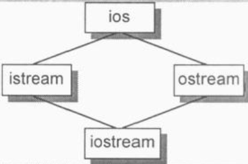

二. 构造函数语意
1.默认构造的建构：
2.拷贝构造的建构：决定一个拷贝构造能否被编译器合成的标准在于class能否展现出位逐次拷贝，如果能展示出位逐次拷贝就不需要合成
有三种情况会调用拷贝构造（注意后两种不是调用拷贝赋值运算符，实测）：
一个类什么时候不展示出位逐次拷贝？前两种情况将合成的构造安插到拷贝构造中
当class有一个成员对象且这个成员对象有一个拷贝构造时（不管这个拷贝构造是明确定义的还是编译器合成的）
当class继承自一个base class而该base class有拷贝构造函数（不管是明确定义的还是编译器合成的）
当class声明了一个或多个虚函数的时候：需要拷贝构造初始化vptr
当class派生自一个继承串链，其中有一个或多个虚基类
拷贝构造要还是不要？
如果支持位拷贝，不需要提供拷贝构造，因为编译器自动为你实施了最好的行为，既快速又安全
如果需要拷贝构造，使用memcpy会更有效率，不管使用memcpy或memset，都只在class不含任何编译器产生的内部成员时才安全，如有虚函数或虚基类就不安全
类的拷贝操作在什么情况下可以直接使用memcpy？
拷贝构造函数通常不应该是explicit的，因为如果没有拷贝赋值运算符，=会被转换为拷贝构造的调用
3.程序转化语意：
X bar(){
X xx;
return xx;
}
// 转化过程（可能每个编译器的实现不一样）：
1. 首先加一个额外参数，类型为对象的引用；
2.在return之前安插一个拷贝构造操作，return空（这就是编译器省略拷贝构造的唯一一种情况<Modern C++ Desgin P123>）
void bar(X &_result){
X xx;
xx.X::X();
_result.X::X(xx);
return ;
}
所以：
X xx = bar();
转换为：
X xx; // 注意，这里是不需要施行默认构造的
bar(xx);
如果是函数指针也是同理
X bar(const T& y, const T& z){
X xx;
return xx;
}
这个会要求xx被membersize地拷贝到编译器所产生的结果中，使用以下替代：
X bar(const T& y, const T& z){
return X(y, z);
}
效率会比较高，避免了一次拷贝构造：
void bar(X& __result, const T& y, const T& z){
__result.X::X(y, z);
return;
}
4.成员函数的初始化：
必须使用列表初始化：
初始化列表的内部实现是将代码安插在构造函数体中，初始化的顺序是按声明次序而不是列表初始化的顺序，初始化执行代码置于任何显式用户代码之前；析构的时候是按相反的顺序吗？
在构造函数初始化列表中调用成员函数（注意所用到的成员变量是否已经初始化）是可行的，但尽量避免这么做，因为你不知道这个成员函数对类型的依赖性又多强，如果依赖的数据成员还没有完成初始化就有问题
this指针在什么时候构建妥当：X::X(/*this pointer, */ int val){ ... }
派生构造中，派生类的成员函数返回值被当作base类的构造参数也是有问题的，vptr的初始化是在基类构造完成之后，是静态调用
三. Data语意
1.数据成员的布局
// 64位测试
class X{}; // sizeof(X)==1
class Y: public virtual X {}; // sizeof(Y)==8
class Z: public virtual X {}; // sizeof(Z)==8
class A: public Y, public Z {}; // sizeof(A)==16
数据成员：
非静态成员的顺序和在类中被声明的顺序一致，任何中间插入的静态成员都不会被放进对象布局中
C++标准要求同一个访问限制符下的成员只需要符合“较晚出现的成员有较高的位置（和栈向下增长的不符？经验证：全局函数中的局部变量和指针向下增长；类中的成员栈向上增长，搞不清了）”即可，各个成员并不一定得连续排列，什么东西可能介于被声明的成员之间呢，如为对齐而补齐的字节，vptr 等
C++没有规定不同的访问限制符下的成员的排列顺序，但大部分编译器还是按照顺序排列
C++标准允许vptr放在对象的任何位置，一般编译器会放在对象的头部或尾部
2.数据成员的存取
3.继承与数据成员
class Point2d{};
class Point3d{};
class Vertex{};
class Vertex3d :public Point3d, public Vertex{};
Vertex3d v3d, Vertex *pv, Point2d *p2d, Point3d *p3d;
pv = &v3d; // 需要进行这样的转换：pv = (Vertex*)(((char*)&v3d)+sizeof(Point3d));
Vertex3d *pv3d; Vertex *pv;
pv = pv3d; 不只是简单的上述转换了，对于指针，内部转换操作需要有一个条件测试：
pv = pv3d ? (Vertex*)(((char*)&v3d)+sizeof(Point3d)):0;
虚拟继承：解决下图所示的菱形继承问题
语言层面导入虚拟继承之后，如果class内含一个或多个virtual base class（下图种的istream或ostream），将被分割成两部分，一个不变局部和一个共享局部。不变局部种的数据不管后继如何衍化总是拥有固定的offset，所以这部分数据可直接存取，共享局部所表现的就是虚基类的部分，这部分数据位置会因为每次的派生操作而有变化，所以只能被间接存取。各家编译器实现技术之间的差异就在于间接存取的方法不同
一般的布局策略是先安排好derived class的不变部分，然后再建立其共享部分；微软的解决办法是引入virtual base class table，每个class object如果有一个或多个virtual base classes，就会由编译器安插一个指针指向virtual base class table
一般而言virtual base class最有效的一种运用形式就是：一个抽象的virtual base class，没有任何数据成员
class ios{ ... };
class istream: public virtual ios{ ... };
class ostream: public virtual ios{ ... };
class iostream: public istream, public ostream { ... };

4.对象成员的效率：
6.指向数据成员的指针
class Point3d{
public:
float x, y, z;
}
Point3d origin;
问题1：
vs上运行printf("x: %p\n", &Point3d::x)为0，
float Point3d::*p1=0; printf("x: %p\n", &Point3d::x); // vs测试打印为FFFFFFFF
float Point3d::*p2 = &Point3d::x; //注意x的类型是float Point3d::
所以 p1 != p2
问题2：&Point3d::x和&origin.z之间有什么差异？
取一个数据成员的地址，将会得到它在class中的偏移量（可以认为它是一个不完整的值），而取一个绑定于类对象上的数据成员得到的是该成员在内存中的真正地址
class A{
public:
void Eat() { cout << "Eat" << endl; }
};
typedef void (A::*TpMemFun) (); // 成员函数指针类型
// 给TpMemFun的对象赋值及调用：
TpMemFun mfp1 = &A::Eat;
A a;
(a.*mfp)(); // 通过普通对象调用A中的Eat成员函数
A *pa = new A;
(pa->*mfp)(); // 通过指针对象调用
四. 函数语意
1.成员函数的各种调用方式